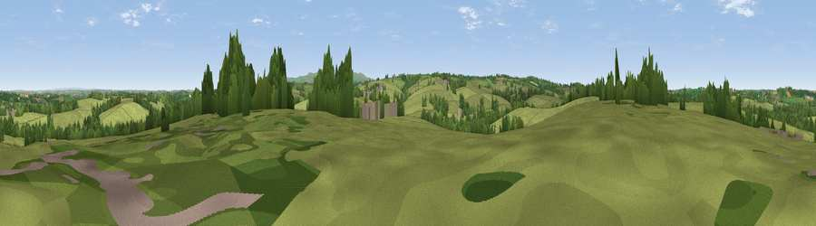

Viewpoint near Northlew
#32254 in England · top 64% of its area beats it · near NorthlewThe view, rendered

A 360° render of this exact spot computed from the terrain model, tree cover and land cover — summer colours, afternoon light, calibrated against photographs of famous viewpoints. Real trees, hedges and buildings will differ in detail.
The panorama
Grey silhouette: terrain skyline in each direction (720 bearings, Earth curvature and refraction included). Dashed green: skyline with trees (+15 m) and buildings (+8 m) as obstacles. Blue strip: how far the ground is visible on each bearing.
Where the view opens
Wedge length = distance to the farthest visible ground on that bearing (vegetation-aware). Rings at 10, 25 and 50 km.
What fills the view
84% grassland · 14% woodland · 1% cropland ·
Angular shares of the visible panorama (visual magnitude), not map area. Landscape diversity 0.23 (0–1 Shannon).
Key numbers
More beautiful places nearby
The staircase of upgrades: each row has a higher view potential than everything closer. Driving times are estimates from straight-line distance, calibrated against real road routing — check an actual route before setting out.
| Place | Direction | Drive | Score |
|---|---|---|---|
| Rutleigh Ball Hill | NE · 2 km | ~5 min | 46.1 |
| Viewpoint near Northlew | S · 3 km | ~7 min | 49.3 |
| Viewpoint near Northlew | ESE · 3 km | ~8 min | 52.8 |
| Viewpoint near Highampton | NNW · 4 km | ~10 min | 59.5 |
| Viewpoint near Bratton Clovelly | SSW · 5 km | ~11 min | 60.9 |
| Viewpoint near Petrockstowe | N · 9 km | ~17 min | 65.5 |
| Viewpoint near Sourton | SE · 12 km | ~22 min | 72.2 |
| Sourton Tors | SSE · 12 km | ~22 min | 74.8 |
50.78433, -4.13242 · source: screening · position refined by local search. Computed location — check access rights before visiting.